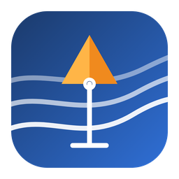
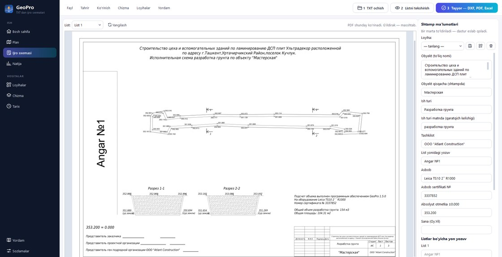
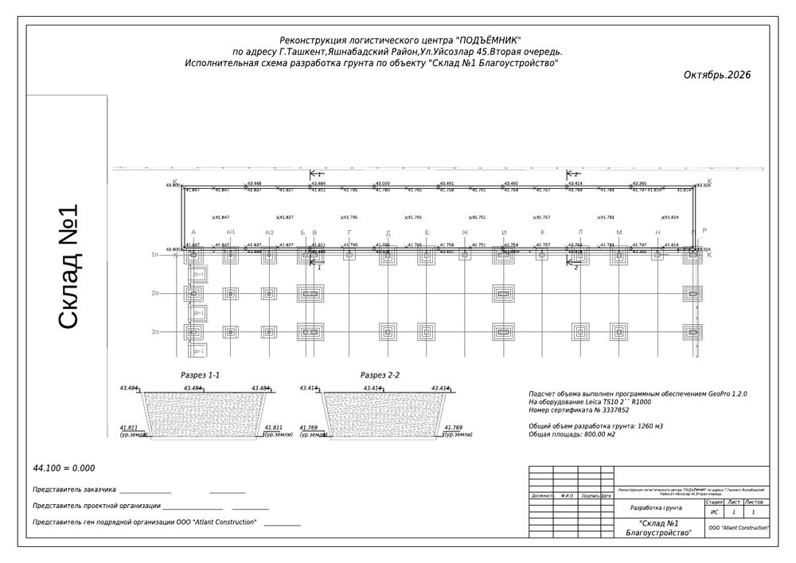

GeoPro.uzGeodezistlar va PTO uchun dastur
Nuqtalar faylini tashlang — GeoPro brovka va tubni ajratadi, hajmni hisoblaydi va ramka, shtamp, plan va razrez bilan A4 listni chiqaradi. AutoCAD ham, Civil 3D ham kerak emas.

Qanday ishlaydi
Dasturning yuqorisida uchta katta tugma bor. Boshqa hech narsa o'rganish shart emas.
Taxeometr yoki nivelir faylini oynaga tashlang: nom, X, Y, H qatorlar yoki Leica GSI. Tayanch nuqtalar o'zi ajratiladi.
Planda ko'k nuqtalar — brovka, to'q sariq — tub. Xato bo'lsa o'ng tugma bilan turini o'zgartiring, nuqtani surib qo'ying — hajm qayta hisoblanadi.
TXT yonida papka ochiladi: …_IS.pdf (A4 listlar), …_IS_1.dxf (AutoCAD/nanoCAD uchun chizma), …_hisob.xlsx (nuqtalar, hajm, razrez).
Natija
List namuna bo'yicha quriladi: ramka va shtamp, obyekt nomi, otmetkali plan, razrez 1-1 (uzun transheyalarda 2-2 ham), hajm va maydon, imzolar. Podoshva brovkadan 0,40 m ichkarida — Civil 3D'dagi usul; hajm ikki TIN yuza orasida aniq integral bilan hisoblanadi.
Loyiha chizmasini (DXF/DWG) qo'shsangiz, o'qlar va poydevorlar plan ostida chiqadi — ijro sxemasi bino o'qlariga nisbatan ko'rsatiladi. O'z ramka-shtampingiz bo'lsa, namuna listni bering — dastur undan shablon yasaydi.

Imkoniyatlar
Narx
10 000so'm / keyingi har bir TXT
Bir xil faylni tuzatib qayta eksport qilish bepul. Loginsiz dastur demo rejimda ishlaydi — hammasi ochiq, faqat listda «ДЕМО-ВЕРСИЯ» yozuvi chiqadi.
Qo'llanma
Dastur ichida ham to'liq qo'llanma bor: «Yordam» tugmasi yoki F1 — o'zbek, rus va ingliz tillarida. To'liq qo'llanma (PDF, 42 bet, rasmlar bilan): GeoPro_qollanma_uz.pdf — o'rnatilgan dasturda «Yordam → To'liq qo'llanma (PDF)».
«Natija» bo'limida asosiy va nazorat hisobi bor. Katta farq — devor yonidagi tub nuqtalari brovkadan uzoq olingan; planni tekshiring. Podoshva masofasi «Qo'shimcha» da o'zgartiriladi (standart 0,40 m).
Jadvalda «Uch.» ustuniga uchastka raqamini qo'lda kiriting; nuqta turini o'ng tugma bilan belgilang. Siyrak s'yomka (har joyda brovka+tub juftligi) ham to'g'ri o'qiladi.
Bepul ODA File Converter o'rnating yoki chizmani istalgan CAD dasturida DXF qilib saqlang — DXF to'g'ridan-to'g'ri ochiladi.
Cheklanmagan — login xodimlarga beriladi. Balans (fayllar soni) har kompyuterda alohida hisoblanadi.
Aloqa